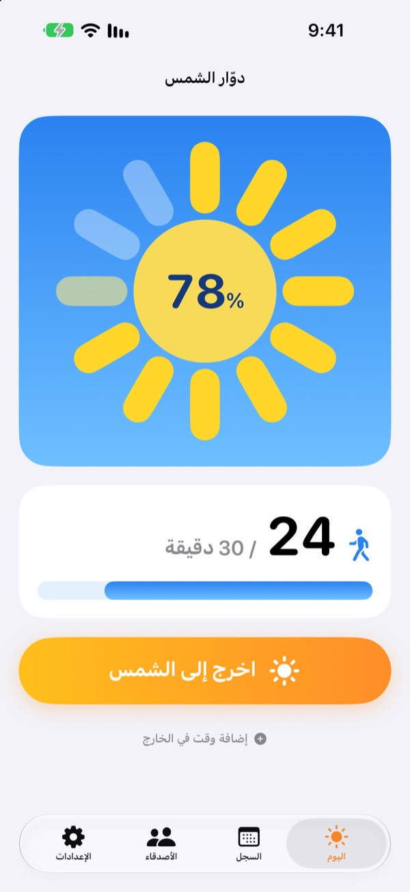
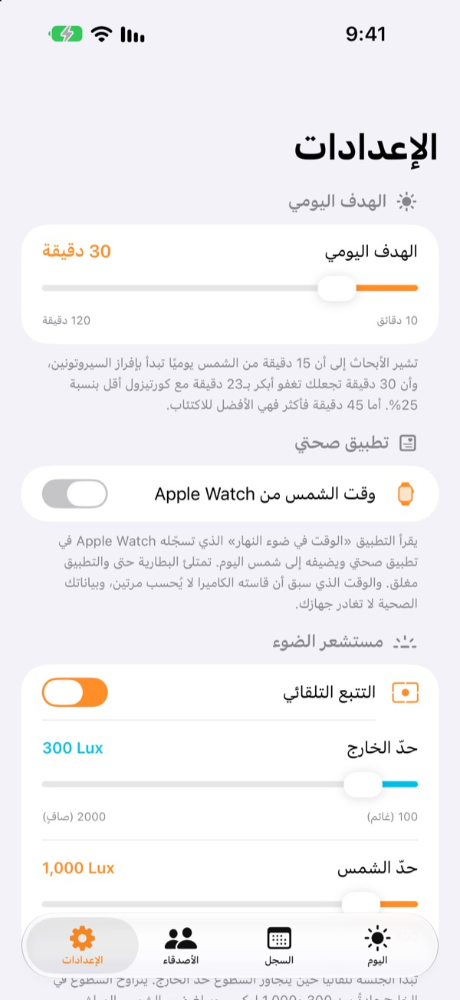
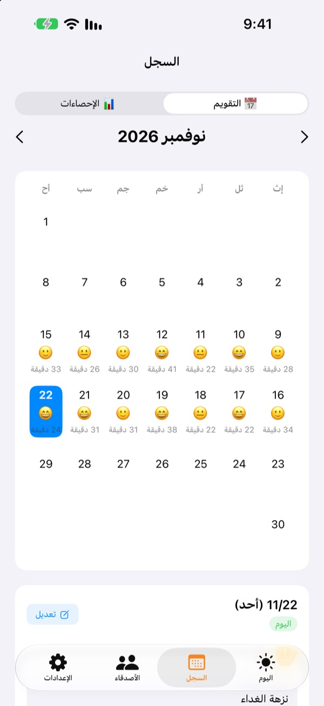
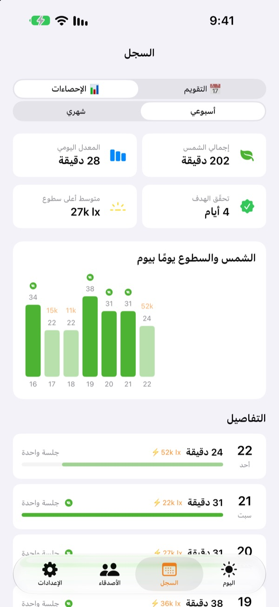

وقتك تحت الشمس
يملأ بطاريتك
اخرج ويُحسب وقتك تحت الشمس من تلقاء نفسه. تمتلئ بطارية الشمس بقدر وقتك في الخارج، وتُظهر أشعة الشمس الاثنتا عشرة كم تبقّى منها.
تتبّع الشمس والهدف اليومي مجانيان. وسجلك يبقى على جهازك.

كم دقيقة قضيت تحت الشمس اليوم فعلًا؟
خطوات قليلة في الطريق إلى العمل، وخروج سريع وقت الغداء. تمضي يومك في الداخل ولا تنتبه إلا مساءً أنك بالكاد رأيت ضوء النهار. يحوّل دوّار الشمس وقتك في الخارج إلى أرقام، وتذكّرك بطارية الشمس متى حان وقت الخروج.
يقيس من تلقاء نفسه حين تخرج
اضغط «اخرج إلى الشمس» وانطلق. يقرأ التطبيق سطوع المكان من بيانات التعريض في الكاميرا الأمامية، وحين يبقى الضوء بقوة ضوء الخارج نحو 30 ثانية يبدأ التتبّع. لا يلتقط أي صور ولا يحفظها.
بعد ذلك يستيقظ المستشعر 20 ثانية فقط كل دقيقتين ليوفّر البطارية.

سجل يومي للشمس والمزاج
في التقويم يحمل كل يوم وقته تحت الشمس ورمزًا لمزاجك وملاحظة قصيرة. قضيت وقتًا في الخارج دون تسجيله؟ استخدم «إضافة وقت في الخارج» لتضيف من 5 إلى 120 دقيقة.

أسبوعك وشهرك في لمحة
تُظهر الإحصاءات الأسبوعية والشهرية الأيام التي بلغت فيها هدفك ومتوسط وقتك تحت الشمس. حدّد هدفًا يوميًا من 10 إلى 120 دقيقة وتابع على الشاشة الأولى كم تبقّى لك اليوم.
وتعرض أدوات الشاشة الرئيسية وشاشة القفل وDynamic Island بطارية الشمس وشمس اليوم.

ثلاث خطوات للبدء
- 1
حدّد هدفك اليومي
يبدأ بـ30 دقيقة، ويمكنك تغييره بين 10 و120 دقيقة من الإعدادات.
- 2
اخرج إلى الشمس
اضغط «اخرج إلى الشمس» وأبقِ التطبيق مفتوحًا وأنت تخرج. يطلب إذن الكاميرا مرة واحدة.
- 3
راقب بطاريتك تمتلئ
كلما طال وقتك في الخارج امتلأت بطارية الشمس، وبلوغ هدفك اليومي يملؤها حتى 100%.
كيف يتحوّل وقتك في الخارج إلى بطارية
- أقل من 300 لوكس
- ضوء خافت: لا يُحسب وقتًا تحت الشمس
- 300 لوكس فأكثر
- في الخارج: يُحسب وقتًا تحت الشمس
- بطارية الشمس
- وقتك في الخارج ÷ هدفك اليومي (الهدف كاملًا = 100%)
- الانخفاض
- 2.5% كل ساعة، فالبطارية الممتلئة تدوم نحو 40 ساعة
يمكنك ضبط حدّ الخارج بين 100 و2,000 لوكس من الإعدادات. القيمة الافتراضية 300 لوكس.
أسئلة
كيف يقيس التطبيق الشمس؟
يقدّر سطوع المكان من بيانات التعريض في الكاميرا الأمامية. وحين يبقى الضوء بقوة ضوء الخارج لحظات قصيرة يبدأ التتبّع تلقائيًا. لا يلتقط أي صور ولا يحفظها.
ألا يستنزف التتبّع بطارية الجهاز؟
بعد التأكد من وجود الشمس لا يبقى المستشعر يعمل، بل يستيقظ نحو 20 ثانية كل دقيقتين ليتحقق من جديد، ويتكفّل عدّاد بسيط بالباقي.
بطارية الشمس تنخفض باستمرار.
تنخفض بطارية الشمس 2.5% كل ساعة. اخرج إلى الشمس لتمتلئ من جديد، فبلوغ هدفك اليومي يملؤها حتى 100%.
كنت في الخارج لكن لم يُسجَّل شيء.
استخدم «إضافة وقت في الخارج» أسفل الشاشة الأولى لتضيف من 5 إلى 120 دقيقة. وإن تعثّر بدء التتبّع في الأيام الغائمة، فاخفض حدّ الخارج من الإعدادات.
كيف تعمل ميزة الأصدقاء؟
حين تكون أنت وصديقك متقاربين (في حدود 10 أمتار تقريبًا) ويتتبّع كلاكما الشمس، تتصلان تلقائيًا. يجب تأكيد التشمّس مع أي شخص جديد أول مرة، ثم يصبح تلقائيًا. تتلوّن أشعة الشمس وتعود إلى لونها خلال 3 أيام، ويُحفظ وقتكما معًا في تبويب الأصدقاء. يلزم التطبيق على الجهازين، مع إذن Bluetooth والشبكة المحلية.
ما المجاني؟
تتبّع الشمس وبطارية الشمس والهدف اليومي والتذكيرات والتقويم والإحصاءات الأسبوعية والتشمّس مع الأصدقاء كلها مجانية وبلا إعلانات. أما أدوات الشاشة الرئيسية والتحديثات الحيّة على شاشة القفل وDynamic Island والإحصاءات الشهرية فتأتي مع دوّار الشمس Pro، باشتراك أسبوعي أو شهري أو سنوي أو بدفعة واحدة مدى الحياة. ويمكنك أيضًا ترك إكرامية، لكنها لا تفتح أي ميزة.
هل يمكنني نسخ سجلي احتياطيًا أو نقله؟
كل شيء يبقى على جهازك بلا أي خادم، ويُحتفظ بآخر 90 يومًا. ويمكنك تصدير السجل في ملف CSV من الإعدادات، كما يُضمَّن السجل في النسخ الاحتياطي المعتاد على iCloud أو الكمبيوتر.
كيف أحذف كل بياناتي؟
انتقل إلى الإعدادات ← البيانات ← «مسح البيانات» في التطبيق، أو احذف التطبيق. لا يمكن التراجع عن ذلك.
أين أبلّغ عن خطأ؟
راسلنا على العنوان أدناه أو افتح بلاغًا في github.com/M1zz/SunlightTracker/issues. يفيدنا كثيرًا ذكر طراز جهازك وإصدار iOS وما حدث. نردّ عادةً خلال أيام قليلة.
لديك سؤال أو ملاحظة؟ راسلنا على leeo@kakao.com.